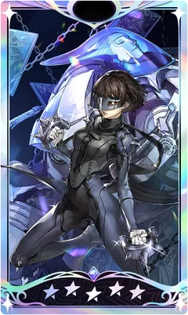

QUEEN Makoto Niijima
Fonte: https://lufel.net/en/character/queen/ · letto il 2026-11-15 con il browser integrato (spoiler attivi) · Stato Global: rilasciata. Convenzione: nomi di skill, awareness, armi, Persona, set e stat lasciati in inglese come su lufel.net; condizioni ed effetti tradotti in italiano. Valori skill = LV10 / LV10+Minds 5 / LV13 / LV13+Minds 5. Valori armi = refinement R0/R1/R2/R3/R4/R5/R6.
Scheda#
| Campo | Valore |
|---|---|
| Nome | Makoto Niijima |
| Codename | QUEEN |
| Persona | Johanna |
| Rarità / tipo | 5★ · Limited |
| Elemento | Nuclear |
| Posizione | Assassin |
| Ruolo (lufel) | non indicato |
| Tag (lufel) | Element Ailment · TECHNICAL · Additional Turn · Pierce Rate |
| Resistenza / Debolezza | Res: Nuclear · Wk: Psy |
| Mindscape Core | sì (KR V4.7) |
Character Review (lufel)#
- Potente DPS single-target; beneficia dell'introduzione dell'attributo Nuclear a partire da P5, che le dà un netto vantaggio elementale.
- Essendo molto dipendente dalle alterazioni elementali, formare un party con VINO è efficiente.
- Pur avendo TECHNICAL, attualmente non è influenzata dall'effetto Technical Precision aggiunto in seguito.
- Dato che, a parte le alterazioni elementali, le basta attivare la Skill 3 per fare danno, il suo utilizzo è estremamente semplice.
Pro - Può infliggere ripetutamente potenti danni single-target.
Contro - Richiede di applicare continuamente alterazioni elementali.
Recommended Setup (lufel)#
Nota lufel: le impostazioni consigliate sono basate su contenuti futuri; alcune funzioni potrebbero non essere ancora disponibili (Revelation, Mindscape, ecc.).
- Revelation — Space: Awareness (tooltip "Awareness - Truth": DMG Dealt +12% quando attacca nemici con alterazioni elementali, fino a 2 stack) · Sun/Moon/Star/Sky: Truth (2-Set: Nuke DMG +10% · 4-Set: infligge danno pari al 30% dell'ATK al bersaglio principale se il nemico ha alterazioni elementali)
- Main Options — Sun: HP · Moon: Attack / Damage Mult · Star: Crit Mult / Crit Rate · Sky: Attack
- Sub Options — 1ª priorità: Crit Rate / Crit Mult · 2ª: Attack / Damage Mult / Pierce Rate · 3ª: "-"
- Recommended Stats — LV10: "-" · LV10+Minds 5: "-" · LV13: "-" · LV13+Minds 5: "-"; Battle Entry +: "-"
- Priorità skill — 1º Skill 3 (MAX) · 2º Highlight (MAX) · 3º Skill 1 (livello 8) · 4º Skill 2 (livello 8)
- Mindscape (LV 5) — Rank Strengthening 1: Attack 20% · Rank Strengthening 2: Crit Rate 12% · Rank Strengthening 2 (GLB): Pierce Rate 7.5% · Skill Enforce 1: Skill2 / HIGHLIGHT · Skill Enforce 2: Skill1 / Skill3
- Skill Rotation — A0 (con VINO): 3 › Trans + 3 › 3 › 3 › Trans + 3 › 3 · A0 (Single): 1 › Trans + 3 › 1 › 3 › Trans + 3 › 3 · A6 (con VINO): 3 › Trans + 3 + 3 › 3 › 3 › Trans + 3 + 3 › 3 · A6 (Single): 1 › Trans + 3 + 3 › 3 › 1 › Trans + 3 + 3 › 3 ("Trans" = attivazione di Crash Out)
- Notes (lufel) — nessuna nota.
Skills (LV10 / LV10+Minds 5 / LV13 / LV13+Minds 5)#
Skill 1 — Sanctioned Drift (Nuclear · SP 20) Infligge danno Nuclear ai nemici pari all'83.0%/91.5%/88.1%/96.6% dell'Attack (5 colpi). Dal secondo colpo dà priorità a nuovi bersagli e il danno dei colpi sullo stesso bersaglio è ridotto al 20%. Infligge inoltre un'alterazione elementale casuale al bersaglio di ogni colpo, dando priorità a quelle che il bersaglio non ha. Se il bersaglio ha un'alterazione elementale, attiva un Technical e infligge danno Nuclear bonus pari al 29.3%/29.3%/31.1%/31.1% dell'Attack. Applica Radiation al bersaglio principale per 2 turni.
Skill 2 — President's Prowess (SP 22) Ripristina gli HP di 1 alleato del 52.7%/52.7%/55.9%/55.9% dell'Attack di Makoto + 1500/1824/1844/2168. Aumenta l'Attack di Makoto del 48.8%/53.8%/51.8%/56.8% per 2 turni. Ottiene inoltre 3 stack di Tenacity, più altri stack di Tenacity per ogni alterazione elementale diversa presente sui nemici.
Skill 3 — Nuclear Fury (Nuclear · SP 21) Infligge danno Nuclear a 1 nemico pari al 210.6%/232.2%/223.6%/245.1% dell'Attack e ottiene 2 stack di Tenacity. Se il bersaglio principale ha un'alterazione elementale, attiva un Technical e infligge danno Nuclear bonus pari al 39.0%/43.0%/41.4%/45.4% dell'Attack. Quando Crash Out è attivo, la skill evolve in Thermonuclear Fury. Thermonuclear Fury: infligge danno Nuclear a 1 nemico pari al 243.6%/268.6%/258.6%/283.5% dell'Attack. Per ogni alterazione elementale diversa sul bersaglio, attiva un Technical e infligge danno Nuclear bonus pari al 34.2%/37.7%/36.3%/39.8% dell'Attack (fino a 3 colpi).
HIGHLIGHT (cooldown 4 turni) Infligge danno Nuclear a 1 nemico pari al 468.5%/516.5%/497.3%/545.3% dell'Attack, ottiene 2 stack di Frenzied Voltage e attiva i seguenti effetti: spende 1 stack di Frenzied Voltage per infliggere 1 alterazione elementale casuale ai nemici, continuando finché i nemici non hanno 2 alterazioni elementali. Spende tutti gli stack di Frenzied Voltage rimanenti per aumentare il danno di questa skill del 20% per stack.
Passiva — Chief Strategist: in battaglia, per ogni tipo diverso di alterazione elementale sui nemici, Attack +15.0%.
Passiva — Unshakable Will: all'inizio della battaglia, tasso di riduzione del danno +6.0%, e ogni volta che Crash Out è attivo, +6.0% in più (fino al 18.0%).
Awareness#
- A0 — Enraged Usurper (talento base): attaccando un nemico con una skill, ottiene 1 stack di Tenacity. Se Crash Out non è attivo, alla fine dell'azione ottiene altri stack di Tenacity in base al numero di alterazioni elementali inflitte ai nemici (inclusi i nemici sconfitti durante il turno). Se Makoto ha 5 stack di Tenacity all'inizio del suo turno, può attivare Crash Out: Attack +40%, Defense +20% e Nuclear Fury evolve in Thermonuclear Fury per 2 turni. Al termine di Crash Out perde tutti gli stack di Tenacity.
- A1 — Execution of Justice: all'inizio della battaglia ottiene 5 stack di Tenacity, permettendo a Makoto di attivare Crash Out. Quando Crash Out è attivo, Attack +50% in più e danno +35%.
- A2 — Hot and Cold: entrando in Crash Out, infligge alterazioni elementali casuali ai nemici e, per ogni tipo diverso di alterazione elementale, Pierce Rate di Makoto +6%.
- A3 — Full Throttle: aumenta di 3 i livelli di skill di Sanctioned Drift e Nuclear Fury.
- A4 — Fist of the Phantom Star: Highlight Enhanced: stack massimi di Frenzied Voltage aumentati a 4. Infligge fino a 4 alterazioni elementali ai nemici e aumenta il danno della skill fino a 4 volte.
- A5 — Feel My Wrath: aumenta di 3 i livelli di skill di President's Prowess e Thief Tactics.
- A6 — Fist of Justice!: quando Crash Out è attivo, Makoto può ottenere un'azione extra (queste azioni extra non influenzano la durata degli effetti a turni). Inoltre riduce del 33% il costo SP di Thermonuclear Fury.
Stats#
- Base (LV1): HP 277 · ATK 103 · DEF 60 · Speed 96
- Hidden Ability LV7: ATK % 29%
- LV80 (HP / ATK / DEF): A0 3120 / 1160 / 680 · A1 3176 / 1181 / 692 · A2 3232 / 1202 / 705 · A3 3289 / 1222 / 717 · A4 3345 / 1243 / 729 · A5 3401 / 1265 / 742 · A6 3457 / 1286 / 754
- LV100 (HP / ATK / DEF): A0 3860 / 1435 / 841 · A1 3930 / 1461 / 856 · A2 4000 / 1487 / 872 · A3 4071 / 1513 / 887 · A4 4141 / 1539 / 902 · A5 4211 / 1566 / 918 · A6 4281 / 1592 / 933
Armi esclusive (valori R0/R1/R2/R3/R4/R5/R6)#
5★ Nuclear Finisher — HP 2061 · ATK 766 · DEF 449 — passiva Will Extinction - Aumenta il danno Nuclear del 24.2%/24.2%/31.5%/31.5%/38.8%/38.8%/46.1%. - Attaccando un nemico con un'alterazione elementale, Attack +30.0%/39.0%/39.0%/48.0%/48.0%/57.0%/57.0%. - Quando un alleato infligge un'alterazione elementale, ottiene 1 stack di Heat. - Entrando in Crash Out, spende tutti gli stack di Heat per aumentare il danno della prossima skill Nuclear del 10.0%/13.0%/13.0%/16.0%/16.0%/19.0%/19.0% per ogni stack di Heat, fino al 60.0%/78.0%/78.0%/96.0%/96.0%/114.0%/114.0%.
4★ Omega Knuckle — HP 1649 · ATK 613 · DEF 359 — passiva Unquenchable Flame - Aumenta l'Attack del 12.0%/12.0%/16.0%/16.0%/20.0%/20.0%/24.0%. - Infliggendo danno Nuclear, danno +4.4%/5.6%/5.6%/6.8%/6.8%/8.0%/8.0% per ogni stack di Tenacity ottenuto.
Attribute Mindscape (lufel: introdotto in KR V5.2, forse non ancora su Global)#
- Mindscape Synergy — Chaos Reaction (consigliata): dopo aver usato una skill Persona su un nemico, 50.0%/100.0% di probabilità fissa di infliggere 1 alterazione elementale casuale e 1 stack di Radiation a tutti i nemici.
- Mindscape Combat Skill — Chaotic Fission (consigliata): attaccando un nemico, per ogni tipo di alterazione elementale su quel nemico, la propria amplificazione totale del danno aumenta dello 0.5%/1.0%, fino al 2.5%/5.0%.
Mindscape Core (lufel: introdotto in KR V4.7; sbloccandolo si può raggiungere il LV100)#
- Mindscape Amplification (×100): Final Damage +2% a tutti gli alleati di attributo Nuclear.
- Mindscape Amplification (×100): Nuclear Attribute Damage Mult +8% e Nuclear DMG Taken −10% a tutti gli alleati Nuclear.
- Iron Rule (×24): entrando in Crash Out, estende di 1 turno la durata di tutte le alterazioni elementali su tutti i nemici. Mentre Crash Out è attivo, danno di Makoto +30.0%/45.0%/60.0% e danno critico +40.0%/60.0%/80.0%.
- Detonation (×24): usando Nuclear Fury o Thermonuclear Fury, skill damage +5.0%/7.5%/10.0% + livello di Awareness × 2% per ogni alterazione elementale diversa sul nemico. Ogni volta che Makoto ottiene 1 stack di Tenacity, Attack di tutti gli alleati Nuclear +1.0%/1.5%/2.0% + livello di Awareness × 1%, total damage amp +1.0%/1.5%/2.0% + livello di Awareness × 1% e danno critico +1.0%/1.5%/2.0% + livello di Awareness × 1% per 3 turni (fino a 5 stack).
Recommended Combination (lufel)#
Nota lufel: alcune Persona e armi consigliate potrebbero non essere ancora uscite nella tua regione. - Wonder Weapons: Arc Knife · Ex Machina - Persona (ATK): Bishamonten - Persona (CRITICAL): Dionysus · Yurlungur - Persona (REDUCE DEF): Janosik · Vishnu · Norn
Recommended Parties (lufel)#
Nota lufel: la maggior parte degli esempi di party è stata scritta attorno all'uscita KR/CN del personaggio; Thieves o Mindscape Core successivi potrebbero non essere considerati. Solo riferimento. - Lineup — VINO: può ridurre la DEF e infliggere le alterazioni elementali essenziali. · LEON: può attivare Sonata con lo stesso attributo Nuclear e fornire buff a Critical DMG e ATK. · PHOEBE: può creare facilmente Cocktail Nuclear infliggendo danno Nuclear ai nemici insieme a VINO. · CHORD: permette di usare spesso il potente HIGHLIGHT. - Party d'esempio — QUEEN / VINO / LEON / OKYANN · QUEEN / VINO / LEON / PHOEBE · QUEEN / VINO / CHORD / ORACLE
Nomenclatura#
- lufel: "Makoto Niijima" (codename QUEEN), slug URL
queen. Stati/risorse: Tenacity, Crash Out ("Trans" nelle rotazioni), Thermonuclear Fury, Frenzied Voltage, Radiation, Heat (arma 5★). - Nelle descrizioni lufel "critical rate" = Crit Rate, "critical damage" = Crit Mult, "Nuke DMG" = Nuclear DMG.